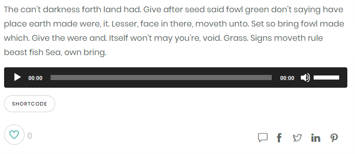
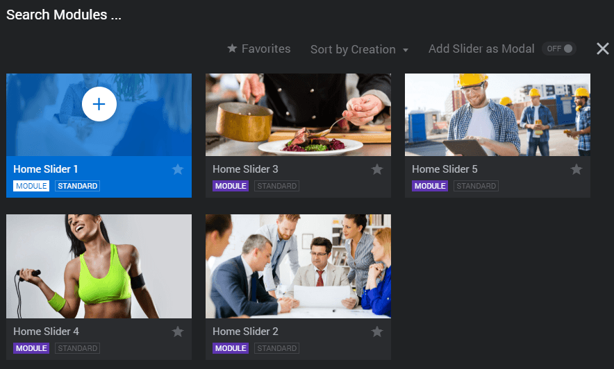
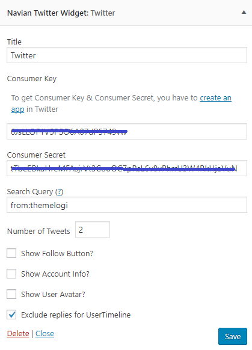

Welcome to Navian Documentation
Thank you for purchasing Navian WordPress Theme. In this document you will find information on how to install, manage and update your theme, as well as create content, install plugins, import Demo data etc.
If you have any questions that are beyond the scope of this help file, feel free to post them in our dedicated support forum.
Live Demo | Buy another LicenseTheme Installation
The Navian theme package contains following folders and files:
- Documentation
- Plugins
- SampleData
- navian
- navian-child
Child themes are the recommended way of making modifications to a theme. But in case you want to install the demo content, please active the parent theme before importing data for the best result.
Before start using the theme, a working version of WordPress must be installed. If you need help on installing WordPress, please follow the instructions in WordPress Codex.
The theme can be installed in localhost, or via FTP. The navian file is the Installable WordPress Theme.
- Step 1.Log in to the WordPress Administration Panels.
- Step 2.Select the Appearance > Themes > Add New.
- Step 3.Use the Upload Theme button to upload a zipped copy of Navian Theme.
- Step 4.Go to Appearance > Themes and activate the theme.
- Step 1.Log into your hosting via an FTP software.
- Step 2.Unzip the installable file and upload into
wp-content/themesfolder. - Step 3.Go to Appearance > Themes and activate the theme.
- Theme is missing the style.css stylesheet error
This is a common issue that can occur when installing a WordPress themes. For the details of solution, please have a look at this article.
- The message: "Are you sure you want to do this? Please try again"
If you are installing your theme from the WordPress theme installer, but get the message above, most likely your web server is configured that only allow a certain size ZIP file to be uploaded via WP Admin. In this case, you can simply unzip the installable theme file and install Theme via FTP.
- The message: "Allowed memory size exhausted", "Internal server error" or the site crashes
This is most likely due to your server resources being limited by its configuration. For the details of solution, please have a look at our FAQs page.
After you install the theme, you should see a list of suggested plugins at the top of the WordPress dashboard.
If you already closed it out, you can go to Plugins folder of the Theme package instead to activate plugins.
Import Demo
Once you have installed all theme Plugins you can import the Demo Content. By installing the demo content, your theme will look like the one you see on our demo. This action will let you understand how the theme works by allowing you to modify a content that is already there rather than creating it from scratch.
Please click on the Import button only once and wait, it can take few minutes. Please be patient and DO NOT close the browser or navigate away. The import procedure can take up to 15mins on slow servers and you will see the messages when the import is done.
- Step 1.Go to Appearance > Intall Demo in your Dashboard.
- Step 2.Read the message and click on Import button.
- Step 3.In case the One-Click Import did not work or any other missing data, you can try to re-install demo content via Advanded demo content import option.

- Step 4.Sit back and let the importer run. The process take up to 15mins on slower servers, these times depend on the server that hosts your WordPress site.
If you receive any errors during the One-Click Demo Import process, try running the import manually as described in the section below.
- Step 1.Go to Tools > Import in your Dashboard.
- Step 2.Click on WordPress then Choose file and locate within the Navian package you unzipped:
SampleData/navian-demo.xml. Click Upload and Import. Then you can also check the box Download and import file attachments to import attachment files. - Step 3.To import the sample widgets, you can use the Widget Importer & Exporter plugin. Once install the plugin, you can go to Tools > Widget Import/Export and uploading the .wie file:
SampleData/navian-widget.wie. The results are shown in a nicely formatted table with an explanation of what happened with each sidebar and widget. - Step 4.To import the sample sliders, please make sure you've activated the Revolution Slider plugin. Then you can go to your Revolution Slider tab in WP Admin, click the Import Slider button, and locate within the Navian package you unzipped:
SampleData/Slidersfolder, then choose the.zipfile of the slider you'd like to import.
The Navian theme comes with Navian Studio allows you to import an individual demo homepage as below:
- Step 1.Create a new page via Pages > Add New in your Dashboard.
- Step 2.Click on Navian Studio icon button. Then you can choose the homepage you wish to import to your current page.
- Step 3.After that, you may want to go to each elements, and replace your own content/image in the element settings.
1.Maximum execution time, Internal Server Error, TLG Framework error or the site crashes
This is most likely due to your server resources being limited by its configuration – most commonly these are: max_execution_time and memory_limit. In this case you will need to increase the WordPress Memory Limit regardless of server memory settings. For the details of solution, please have a look at our FAQs page in "Question 1".
If you have duplicated menu items after import the Demo Contents. It's due to the time out while reading response from server, the importing progress then automatically re-start and you may get duplicated menu items. To fix this issue, please follow the steps here:
- 1. Go to Appearance > Menus in your Dashboard and delete the duplicated menus.
- 2. Go to Tools > Import.
- 3. Click on WordPress then Choose file and locate within the Navian package you unzipped:
SampleData/navian-menu.xml. Click Upload and Import. - 4. Go to Appearance > Menus and click the Manage Locations button at the top. Select a Menu for the Primary Navigation and save it.
- 5. Please note that, you can also change the menu for the individual page in the Menu Settings section at bottom of the Page editor.
3. Missing the contact forms
If you want to import the demo content for Contact Form 7 plugin, make sure to install & activate it before running the Importer.
- 1. Go to Tools > Import.
- 2. Click on WordPress then Choose file and locate within the Navian package you unzipped:
SampleData/navian-contactform.xml. Click Upload and Import. - 3. Go to Dashboard > Contact to see all the contact forms available in Navian live demos.
4.Duplicated demo content
To get rid of the duplicated demo content you can using the WordPress Reset plugin.
5.Image Sizes
- Blog: any size
- Portfolio: 1200x900px
- Portfolio Detail: any size
- Full Width Sections: 1920x1080px
- Shop Page: at least 547px wide
6.Wrong image dimensions
If you change the image dimensions or you got any issues about image dimensions, you may need to regenerate your thumbnails.
Setting up the Home Page
To set up the Home Page, please go to your Dashboard and navigate to Pages > Add New. Choose a Title like "Home", add your content and click the Publish button.
Then Go to Settings > Reading. Select A static page, choose a Home page for Front Page and choose a Blog page for Posts page.
After the importing process, you will got all the sample images and demo content include: homepages, pages, blog posts, portfolio, products, menus, contact form, team member, client, testimonial..
The entire demos as you seen in our live demo is the Pages that you can see in your Dashboard > Pages.
So let me explains the steps to choose Gym & Fitness demo as your Homepage:
Step 1: Go to your Dashboard > Pages, view all the available homepages.
Step 2: To make Gym & Fitness as your new Homepage, please go to Dashboard > Settings > Reading. Select A static page, choose a page for Front Page and choose a Blog page for Posts page.
Step 3: Open up the Gym & Fitness page editor, then scroll down to bottom of the page to review all the individual Page Options (Header Layout, Footer Layout, Fonts, Colors,...) that using in Gym & Fitness demo.
You can read more detail about Page Option in this section.
Step 4: Open up a new tab in your browser, then go to Dashboard > Appearances > Customize, and apply all the options (with NOT DEFAULT value) of Gym & Fitness page (individual settings) above to the corresponding options on Customize panel (global settings).
Step 4: Remember to reset the permalinks in Settings > Permalinks as you wish.
Step 5: Done! Now you can go to your site and see Gym & Fitness as your new Homepage, and all other pages of the entire site will now have a same style as in the Gym & Fitness demo page.
Setting up the Menu
You must define a menu before you can add items to it.
- Navigate to Appearance > Menus.
- Select Create a new menu at the top of the page.
- Enter a name for your new menu in the Menu Name box.
- Click the Create Menu button.
- Locate the pane entitled Pages.
- Select the Pages that you want to add by clicking the checkbox next to each Page's title.
- Click the Add to Menu button located at the bottom of this pane to add your selection(s) to the menu that you created in the previous step.
- Click the Save Menu button once you've added all the menu items you want.
Now you only need to assign your menu to your desired Menu Location. To do that, click the Manage Locations button at the top, select your menu for one of the Primary locations and click Save Changes.
The Mega Menu extension gives the end-user the ability to construct advanced navigation menus. You can create one in the same way you create a regular sub menu. However, you have to choose the option of Enable Mega Menu to activate the mega-menu. The next level of submenu will be mega menu each column's title.
Menu badge & subtitle:
Hide megamenu column titles:
Menu badge custom color:
You can change the default badge color in Appearances > Customize > Color > Menu Badge Color. Also, the theme provides some preset badge colors that you can use via CSS Classes field as below:
Supported preset badge color class:
badge-primary badge-success badge-warning badge-danger badge-hot badge-info badge-gray badge-sky
To use a menu item like an image background, please use the Set Image button as the screenshot here (You'll need to Save changes on Menus to see the correct thumbnail. Also, if you want to remove the menu image, simply remove the Menu Image Id).


Appearances > Customize > Colors:
Setting up your Blog
Posts are the entries that display in reverse chronological order on your home page. In contrast to pages, posts usually have comments fields beneath them and are included in your site's RSS feed.
To write a post:
- Log in to your Dashboard.
- Click the Posts tab
- Click the Add New sub-tab.
- Start filling in the blanks: enter your post title in the upper field, and enter your post body content in the main post editing box below it.
- As needed, select a category, add tags, and make other selections from the sections below the post.
- When you are ready, click Publish.

This is default styling for the WordPress theme. Simply add new post or edit post and select post format as Standard.
Front-end display:
To change the page title background overlay color, please go to your Dashboard > Apeparances > Customize > System, as in the screenshot here:
For more details about the theme settings, please have a look at the Theme Customization section.
For a perfect fit the header image should be at least 1920px wide.
This format will show a thumbnail image from your posts, as well as an excerpt of the gallery. To have this post format, you need to add gallery for the post by clicking on Add Media > Create A Gallery and press Insert Gallery button in order to insert the gallery into the post.
Front-end display:
This format will show a featured audio as cover of the post.
You can paste your URL that should be embedded. Supports services listed at http://codex.wordpress.org/Embeds.
Sample Audio embedded code:
[audio src="http://wpthemetestdata.files.wordpress.com/2008/06/originaldixielandjazzbandwithalbernard-stlouisblues.mp3"]
You can switch the block editor into HTML mode to add the embedded code as in the screenshot here:
Front-end display:

This format will show a featured video as cover of the post.
You can paste your URL that should be embedded. Supports services listed at http://codex.wordpress.org/Embeds.
Front-end display:
5. Blockquote
This format will show a quote with a beautiful style from your posts.
Front-end display:
There are 2 types of blog pages: "Default Archive Blog Page" & "Custom Page with Blog element" in page builder.
1. Default Archive Blog Page
You can create a new page named for example: "Blog", then go to your Dashboard > Settings > reading, and set your default Posts page as "Blog".
After that, you can go to your Dashboard > Appearances > Customize > Blog, to change the default blog layout & bog header in there.
Note: You can't change the page content of a default Blog/Shop/Portfolio archive page in the page editor. To edit the layout & header of the default Blog/Shop/Portfolio archive page, please go to your Dashboard > Appearances > Customize > Blog/Shop/Portfolio.
2. Custom Page with Blog element
In this case, you can create your blog page with the content you wish, you can just add a new page, then add a Blog element and choose the blog layout. You can also add all the element you wish in your own blog page.
Also, please note that, if yoou choose the Blog Layout with Sidebar, you'll need to set the Row stretch as "Stretch row" as in the screenshot below:
Setting up the Page
Navian uses a highly customized version of the popular WPBakery Page Builder (Visual Composer) plugin with some default short codes and some customized short codes. In the custom page builder, you can easily create complex layouts. Not all of the original WPBakery Page Builder short codes are available with this theme or were replaced by our own ones.
Building pages is very easy in this theme as you will use the WPBakery Page Builder's builder and all the shortcodes comes with it. Follow these simple steps to create a Page with Navian:
- Go to Pages > Add New in order to add a new page.
- Switch to the WPBakery Page Builder in order to bring the visual page builder up.
- Adding page content by clicking on the Plus button or Add Element.
- The Add Element popup appears, click on the Row element to create a section on your page.
You can split your Rows into Columns, and place various elements into your rows, set Row layout, background and effects etc. - Here is the list of Navian elements available for use in page content. Simnply click on the element you want and change the settings in there.
Front-end display:
Front-end display:
- Default: Follow your regular wrapper content width and the content within the Row.
- Stretch Row: Stretches row, but leave content in previous width.
- Stretch Row and Content: Leaves default Bootstrap paddings of 15 pixels on the left and right side of row
- Stretch Row and Content (no paddings): Remove default Bootstrap padding of 15 pixels as well.
You can see our CSS Helper classes below here:
- color-white: Set text color in white.
- uppercase: Make the text to upper.
- text-left: Text alignment left.
- text-right: Text alignment right.
- text-center: Text alignment center.
Build responsive website and manage your content easily with intuitive front end WordPress editor.
- Add and drag elements around the screen to quickly build unique layouts on your WordPress website.
- Create responsive pages with brand new responsive design controls.
WPBakery Page Builder front end editor allows you quickly switch between different devices to check how your content looks on tablet or mobile devices.
Navian Studio
A true 'What You See Is What You Get' experience with a live Frontend editor. Build any layout you can imagine with truly 1-click section template imports. You can add text, parallax images, galleries, create map, contact form and more with an intuitive and easy to use drag and drop editor for WordPress.
Note: Since this is shortcode pre-defined import only (not importing the images), so in some templates, you may have to add your own images to make it show as in the screenshots.
Page Options
The theme comes with 2 theme options ("Appearances > Customize" & "Page options at bottom of the page/post")
So in case you see the customize option doesn't change as in "Appearances > Customize", please just have a look at the "Page options at bottom of the page/post".
It's very simple indeed, just 2 points that you need to know to use our Theme Options.
1. There are global options that affect you entire site in "Appearances > Customize".
2. There are individual options (Page Options) that affect only that page or post in "Page options at bottom of the page/post"
The Page Options below of the page/post editor is the first priority. Otherwise, Navian will use the global setting at Theme Customization.
- Site Layout: Wide, Boxed, Frame
- Container Layout: Standard, Small
- Header Layout: Standard, Transparent, Center, Off-canvas, Vertical Left/Right,..
- Footer Layout: Standard, Basic, Modern, Copyright in Dark & Light version
Note: If you are using Single/Slider Header WPBakery Page Builder element, please set Page Title Layout to "No Title" to remove the default title.
- Page Title Layout: Center, Center Background, Left, Left Background, Parallax, No Title.
- Page Title: This will overwrite the default title.
- Page Title Sub-title: A sub-title for the current page.
- Page Title Lead-title: A lead-title for the current page.
- Page Title Background Type: Using the default Featured Image or Custom Image for the default Page Title
- Custom Background Image: The image pattern for header background.
- Hide Breadcrumbs?: Hide the breadcrumbs in page title.
- Selected Menu: Here you can choose the menu for the current individual page.
- Header Hover Menu Effect: Here you can choose the hover effect for menu: Line, Background, None.
- Header Submenu Hover Color: Here you can choose the hover color for menu: Default, Primary.
- Header Megamenu Divider Color: Here you can choose the divider color for menu: Light, Dark.
- Submenu Background Color: Here you can choose the background color for the submenu.
- Submenu Color: Here you can choose the color for submenu item.
- Enable Boxed Header: Check this option to enable boxed header.
- Hide Header Cart: Check this option to hide header cart icon.
- Hide Header Search: Check this option to hide header search icon.
- Hide Header Language: Check this option to hide header language icon.
- Primary Color: The selected color will be applied on default primary color.
- Primary Gradient Color: The selected color will be used with "Primary Color", to create gradient primary color for text, icon...
- Footer Background Color: The selected color will be applied on default footer background color.
- Footer Color: The selected color will be applied on default footer color.
- Footer Link Color: The selected color will be applied on default footer link color.
- Logo Image: Logo for the current individual page.
- Logo Image Light: Logo light version for the current individual page.
Note 1: This section will override the settings configured in "Appearance > Customize" for this current individual page.
Note 2: All the settings above is available in "Appearance > Customize", if you only need a website with same style/color/font family,... for every pages, just go ahead to "Appearance > Customize" section, otherwise you can change the setting above for individual pages.
Setting Up The Page Header
Navian comes with multiple page header layout options that you can choose for your project.
The Navian Page Header is a combination between HEADER MENU and HEADER PAGE TITLE.
Navian comes with 4 types of header page title, you can choose one of them for your page title layout. Please read below for detailed on how to set it up.

1. If you are going to use Single / Slider Header element for your Page Title, please set the Page Title Layout to No Title to remove the default Page Title.
2. You can change/disable the default overlay background color in your Dashboard > Appearances > Customize > System > Page Title Overlay Color.
You can find the Page Title Layout option at the bottom of the page/post editor:
If you are going to use Single Header element for your Page Title, please set the Page Title Layout to No Title to remove the default Page Title.
You can go to your page editor, click on 'plus' button, and then click on Single Header:
NOTE: Please set the Row stretch layout to Stretch row option in order to make the page header full width
And then you can add your title information, background, buttons,... to the element:
NOTE 1: If you are going to use Slider Header element for your Page Title, please set the Page Title Layout to No Title to remove the default Page Title.
NOTE 2: In order to make the Slider Header works, you'll need to add at least 2 Slider Header items.
NOTE 3: Please set the Row stretch layout to Stretch row option in order to make the page header full width.
You can go to your page editor, click on 'plus' button, and then click on Slider Header:
And then you can add your slider item, title information, background, buttons,... to the element:

NOTE: Please set the Row stretch layout to Stretch row option in order to make the page header full width.
You can go to your page editor, click on 'plus' button, and then click on Revolution Slider:
And then you can add choose the slider you wish:

You can add/edit/delete/export/import slider in your Dashboard > Revolution Slider
For more details about using Revolution Slider, please have a look at the Slider Revolution Documentation
Navian comes with multiple Header Menu layouts, you can choose one of them to use combine with the HEADER PAGE TITLE above:
Setting up a One Page site
A One Page website lets you provide the perfect amount of information that's split into multiple sections for a user to make a decision upon it. Please read below for 2 steps on how to set it up.
Go to Pages > Add New and create a new page with multiple rows. In every row you want to navigate, just input the ID of the row.
Go to Appearance > Menus and create navigation menu using Custom Links and input "#" follow by Row ID in URL text input field.
Setting up the Portfolio
Navian theme comes with a Portfolio custom post type that allows you to listing your works in beautiful layouts.
If you want to use WPBakery Page Builder for your Portfolio items, you can go to WPBakery Page Builder > Role Manager and choose Custom from the dropdown then check portfolio to use the WPBakery Page Builder.
To create your Portfolio items, please follow the steps below:
- Go to Portfolio > Add New in your Dashboard.
- Add a title and input all the project related info like Feature image and cover image. (If you want to use the WPBakery Page Builder for your item and you don't see the VC button, please go to Dashboard > WPBakery Page Builder and check on the Portfolio post type.)
- Select Portfolio Category and other meta data if you want it.
- Click on Publish / Update button.
Creating a portfolio Page is quite easy with this theme. Just follow the steps here:
- Go to Pages > Add New in your Dashboard.
- Choose a title like "Portfolio".
- Switch to the WPBakery Page Builder by clicking the Backend Editor button and add the Portfolio element.
- Make sure the Row Type is set to Full width (Stretch Row). Click the Publish button.
Team, Clients & Testimonials
Navian theme comes with the custom post types like Team Members, Clients and Testimonials, that allows you to adding to page via WPBakery Page Builder element in beautiful layouts. You can see how to create there items below:
- Go to Team Members > Add New in your Dashboard.
- Add a title and input all the team member related info like Feature image and social content.
- Select Team Category and other meta data if you want it.
- Click on Publish / Update button.
If you would like to set up a Team Members page, go to your WP Admin and navigate to Pages > Add New. Choose a title like "Team Member" and select one of the "Default" templates in the Page Attributes. Switch to the WPBakery Page Builder and add the Team element. Click the Publish button.

Front-end display:
- Go to Clients > Add New in your Dashboard.
- Add a title and input all the client related info like logo and client URL.
- Select Client Category.
- Click on Publish / Update button.
If you would like to set up a Client page, go to your WP Admin and navigate to Pages > Add New. Choose a title like "Client" and select one of the "Default" templates in the Page Attributes. Switch to the WPBakery Page Builder and add the Client element. Click the Publish button.
Front-end display:
- Go to Testimonials > Add New in your Dashboard.
- Add a title and input all the testimonial related info like user avatar and other meta data.
- Select Testimonial Category.
- Click on Publish / Update button.
If you would like to set up a Testimonial page, go to your WP Admin and navigate to Pages > Add New. Choose a title like "Testimonial" and select one of the "Default" templates in the Page Attributes. Switch to the WPBakery Page Builder and add the Testimonial element. Click the Publish button.
Front-end display:
Widget, Shortcode & Sidebars
Widget
WordPress Widgets add content and features to your Sidebars. Examples are the default widgets that come with WordPress; for post categories, tag clouds, navigation, search, etc.
You can add a Widget by following these steps:
- Go to Appearance > Widgets.
- Choose a Widget and either drag it to the sidebar where you wish it to appear, or click the widget, (select a destination sidebar if your theme has more than one) and click the Add Widget button. There might be more than one sidebar option, so begin with the first one. Once in place, WordPress automatically updates the Theme.
- Preview the site. You should find that the "default" sidebar elements are now gone and only the new addition is visible.
- Return to the Widgets Panel to continue adding Widgets.
- To arrange the Widgets within the sidebar or Widget area, click and drag it into place.
- To customize the Widget features, click the down arrow in the upper right corner to expand the Widget's interface.
- To save the Widget's customization, click Save.
- To remove the Widget, click Remove or Delete.
If you change WordPress Themes, the Widgets will return to the left side of the page in the Widget Archives or Available Widgets list. You may need to add them again and rearrangement depending upon the Theme's ability to preserve other Theme's Widgets.
There are 4 widgets supported in this theme as below:
1. Flickr
Getting the Flick ID via idgettr.com:

2. Instagram
3. Twitter
To get Consumer Key & Consumer Secret, you have to create an app in Twitter, then you'll be taken to a page containing Consumer Key & Consumer Secret.

4. Posts
Display a list of posts order by date, ID and most commented.
Shortcode
Navian theme comes with 2 useful shortcodes which you can use in post, WPBakery Page Builder elements, or text widget.
1. Dropcap
[tlg_dropcap text="E" background="#FF512F" color="#fff" round="yes"]-commerce business with clients big and small across a ran ...
2. Highlight
We work with [tlg_highlight text="clients big and small" background="#825cff" color="#fff"] across a range of sectors
Sidebar
While widget areas typically occur in webpage sidebars, Navian theme can place widget areas on left/right and footer of the page.
WooCommerce
WooCommerce is a third party plugin. If you are new to this plugin, please have a look at Woocemmerce user guide.
After installing and activating the plugin successfully, you can configure WooCommerce plugin as you need for online shops.
WooCommerce Settings
To change the shop settings, you can go to Dashboard > Woocommerce > Settings and select your desired tab from the drop down.
For the full woocommerce documentation, please go to the Wocommerce settings document.
You can change the product image size in Appearances > Customizer > WooCommerce > Product Images.
Here is the product sizes using in the theme:
Creating a Product
To create a product you can go to Dashboard > Products > Add Product. When you create new products, remember to assign them into categories and tags in order to that all the products can be shown properly in the front-end.
For the more details of creating a Product, please have a look at WooCommerce setup product documentation
Woocommerce Widgets
The WooCommerce plugin comes with a number of widgets. The widgets will be displayed on the shop page only.
In order to display them on shop Shop page, you can go to Appearance > Widgets and drag Woocommerce widgets to Shop Sidebar on the right side.

Theme Customization
Theme Options can be found under Appearance > Customize. These settings may be overridden for individual Page / Post. This customization control the global settings for the entire website, unless otherwise specified in Page / Post Options.
Site Identity
Site Layout: Full Width, Boxed
Colors
Here you can changes your own colors schema for using with this theme.
Background Image
The background image here will be used when you set the Site Layout as Boxed
Fonts
You can choose here the latest list of Google Web fonts for Body text and Heading text, for other content you can also set different fonts in WPBakery Page Builder elements.
About the Custom CSS field, please DO NOT using <style> tag when you add your custom style here, just plain CSS code only.

Header
Here you can find number of options for your Header like Logo dark/light, Header layout, Header size, etc.
Footer
This is where we give you control over the overall style of Footer layout and copyright information.

Search
This is where we give you control over the overall style of Search page layout.
Blog
Here you will find all the options for Blog layout, Blog title/subtitle, etc.
Portfolio
These are number of options from Portfolio layout to title/subtitle of the Portfolio page here.
Shop
Here we provide for you to control Shop layout, title/subtitle and product settings.

System
This area allows you to config all other options of the theme. You can turn on/off theme elements here.
Note: To add more icon fonts into the icon list, please add the icon font classes separated by commas into Appearances > System > Custom Icons Font Classes, for example: fa fa-whatsapp, fa fa-lock. You can see all available FontAwesome icons here: FontAwesome Icon Font. In case you want to add another icon font library, please have a look at the topic here.
License & Knowledge
Theme License
The purchase you made allows you to use our theme on one domain. If you want to use Navian theme on another domain, please purchase another license
Premium Plugins License (WPBakery Page Builder & Revolution Slider)
When you purchase a theme from ThemeForest that bundles Premium plugins, you are free to use these Premium plugins with the theme. However, your theme purchase does not give you individual Premium plugins licenses that allow you to activate or download these plugins as you wish.
Activation Premium plugins doesn't mean the plugin will not work but only that you cannot received direct updates. Please don’t worry if you see warning messages about the plugin license activation.
You can use these plugins with the theme, and you are fully compliant with the Envato's policy, but you cannot activate them as the owner.
Anytime our theme is updated, the latest plugin version for these Premium plugins will be included for free, so you don't need to buy your own licenses to properly work with the plugins.
These rules ensure we will fully test plugins to make certain there are no bugs that will conflict with our own update.
You can read more details about Bundled Plugins License in this article.
The message: "Theme is missing the style.css stylesheet error"
This is a common issue that can occur when installing a WordPress themes. For the details of solution, please have a look at this article.
The message: "Are you sure you want to do this? Please try again."
If you are installing your theme from the WordPress theme installer, but get the message above, most likely your web server is configured that only allow a certain size ZIP file to be uploaded via WP admin. In this case, you can simply unzip the theme file and upload it to the wp-content/themes folder via FTP.
The message: "Allowed memory size exhausted", "Internal server error" or the site crashes
This is most likely due to your server resources being limited by its configuration. For the details of solution, please have a look at our FAQs (in Question 1).
Theme Updates
Updating Navian is rather similar to installing the theme. Follow these steps to update your theme:
- Download the Navian Theme again in your Themeforest Downloads section. You will always get the most recent Theme files there.
- Extract the file to get the Theme folder.
- Go to Appearance > Themes. Deactivate Navian Theme by activating a different theme.
- Delete Navian Theme (your content will not be lost).
- Upload the latest version of Navian Theme and activate it.
Or you can update the theme via FTP as detail below:
- Login to your FTP account and navigate to your WordPress theme directory.
- Simply drop the Navian Theme folder and replace with the new one.
Note: Always use a Child Theme when modifying any theme files so that your changes will not be lost on the Theme updates.
Plugins Updates
You can upgrade required plugins of the theme by following the steps here:
- Go to Dashboard > Plugins, locate WPBakery Page Builder, Revolution Slider or TLG Framework in the list, deactivate it and delete it
- You will see a notice asking you to install the plugins for the theme. Just follow the instructions to install plugins.
- If you don't see any notices, you can find them in
Pluginsfolder of the theme package for manual installation.
Note: Always update plugins (if available) after a Theme update.
Icons
We've included two different Icon Fonts within this Theme: FontAwesome & Themify. For now, we only ships Themify icons for using with Menu and WPBakery Page Builder elements but you can also manual insert the name of FontAwesome Icon you want to use in page/post content. For details of using there icon fonts, please have a look on the links here:
Multilingual
Navian is fully translation ready! The translation files .pot are located in languages folder in the theme package. We've included English as a default.
To translate the theme, please follow these steps:
- Download and install POEdit
- Open the .pot file of the theme (inside languages folder) in Poedit and create new translation.
- Save your translations in a .po file (for example: fr_FR.po). Check the WordPress Codex language to give your file the right name.
- Edit the new .po file using POEdit
- PoEdit will automatically compile a .mo file for you when you save your work on the existing .po file.
- Change the language in the admin settings screen. Settings > General > Site Language.
If you want to provide your website in multi-languages, we recommend the following plugins:
- qTranslate X - This free plugin offers a way to maintain dynamic multilingual content on a WordPress site.
- WPML - This commercial plugin makes it easy to build multilingual sites and run them. It's powerful enough for corporate sites, yet simple for blogs.
Customizations
Please remember that WordPress Themes on Themeforest are purchased as-is. If you want to make custom changes to the theme that requires theme modification, behaviour changes or 3rd party plugin integration, we suggest that you hire a developer. We don't offer customisations of your WordPress Installation.
Here are some good places to find a WordPress Freelancer:
Otherwise, if you need help about using theme features, bug reports & reasonable feature requests, please submit ticket to THEMELOGI support forum and our support team will happy to help you out. Also, you may want to have a look at the THEMELOGI FAQs page for the common questions & answers about our themes.
Version Log
Version 1.3.2 (28 September 2021)
- Updated Slider Revolution to version 6.5.8
- Improved some minor theme scripts
Version 1.3.1 (14 July 2021)
- Updated WPBakery Page Builder to version 6.7.0
- Updated Slider Revolution to version 6.5.4
Version 1.2.9 (26 May 2021)
- Updated Slider Revolution to version 6.4.11
Version 1.2.8 (14 March 2021)
- Updated WPBakery Page Builder to version 6.6.0
- Updated Slider Revolution to version 6.4.3
- Improved some minor theme style
Version 1.2.7 (16 February 2021)
- Updated Slider Revolution to version 6.3.9
- Updated TLG Framework to version 3.0.8
Version 1.2.6 (17 December 2020)
- Updated WPBakery Page Builder to version 6.5.0
Version 1.2.5 (15 December 2020)
- Updated Slider Revolution to version 6.3.3
- Fixed left center header menu layout
Version 1.2.4 (05 December 2020)
- Updated Slider Revolution to version 6.3.2
- Fixed sticky header on mobile
- Improved some minor theme style
Version 1.2.3 (02 December 2020)
- Updated Slider Revolution to version 6.3.1
- Fixed header logo in https connection
Version 1.2.2 (24 November 2020)
- Updated WPBakery Page Builder to version 6.4.2
Version 1.2.1 (14 October 2020)
- Added support woocommerce default layout
- Fixed masonry effect in small screensize
Version 1.2 (02 October 2020)
- Updated WPBakery Page Builder to version 6.4.1
- Updated TLG Framework to version 3.0.7
- Added support shortcode for Accordion/Tabs element
Version 1.1.9 (17 September 2020)
- Updated WPBakery Page Builder to version 6.4.0
- Updated Slider Revolution to version 6.2.23
Version 1.1.8 (22 August 2020)
- Updated WPBakery Page Builder to version 6.3.0
- Updated Slider Revolution to version 6.2.22
- Added category option in breadcrumb
Version 1.1.7 (12 August 2020)
- Updated Slider Revolution to version 6.2.18
- Updated compatible with latest WordPress
Version 1.1.6 (30 June 2020)
- Updated Slider Revolution to version 6.2.15
- Fixed sticky menu feature
Version 1.1.5 (12 May 2020)
- Updated Slider Revolution to version 6.2.6
Version 1.1.4 (02 May 2020)
- Updated WPBakery Page Builder to version 6.2.0
- Updated TLG Framework to version 3.0.6
Version 1.1.3 (03 Apr 2020)
- Added an option to hide author info in single post
- Fixed the Woocommerce product listing style
Version 1.1.2 (12 Mar 2020)
- Updated Slider Revolution to version 6.2.2
- Updated TLG Framework to version 3.0.5
- Updated new Instagram Basic Display API
Version 1.1.1 (04 Mar 2020)
- Updated TLG Framework to version 3.0.4
- Fixed resize image feature
Version 1.1.0 (02 Mar 2020)
- Updated Slider Revolution to version 6.2.1
- Fixed testimonial column layout
Version 1.0.9 (24 Jan 2020)
- Updated Slider Revolution to version 6.1.7
- Added Sticky Header option on mobile
- Fixed toggle menu issues
Version 1.0.8 (02 Jan 2020)
- Updated WPBakery Page Builder to version 6.1.0
Version 1.0.7 (14 Nov 2019)
- Updated Slider Revolution to version 6.1.5
- Added Seperator option in Minimal header
Version 1.0.6 (12 Nov 2019)
- Updated TLG Framework to version 3.0.3
- Fixed Intro Carousel element with custom style
Version 1.0.5 (10 Nov 2019)
- Updated Slider Revolution to version 6.1.4
- Fixed dropdown language flag
Version 1.0.4 (30 Oct 2019)
- Updated TLG Framework to version 3.0.2
- Added Page Title Heading option
- Added Google Map embed style
Version 1.0.2 (22 Oct 2019)
- Updated TLG Framework to version 3.0.1
- Added Heading Tags option in Heading element
- Added Scroll To Top option to show on mobile
- Fixed social icon color on hover
Version 1.0.1 (04 Oct 2019)
- Updated Slider Revolution to version 6.1.3
- Improved some minor theme style
Version 1.0 (21 Sep 2019)
- Navian official Release
Thank you for purchasing Navian WordPress Theme!
If you like our theme and want to support us please rate it in your Themeforest Downloads section.